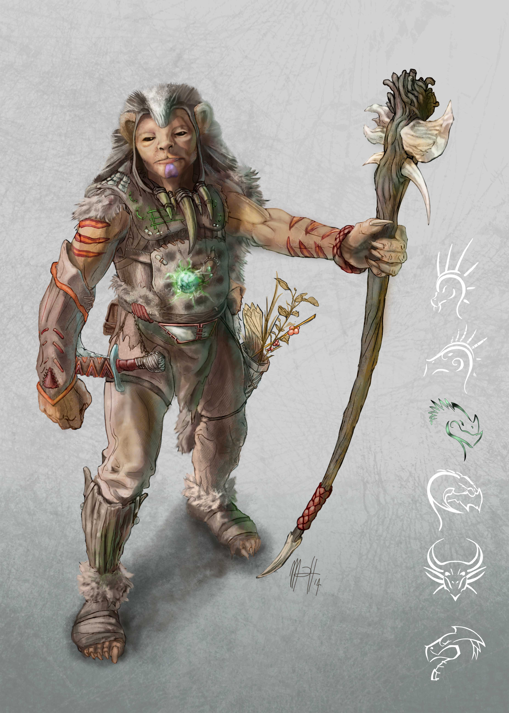
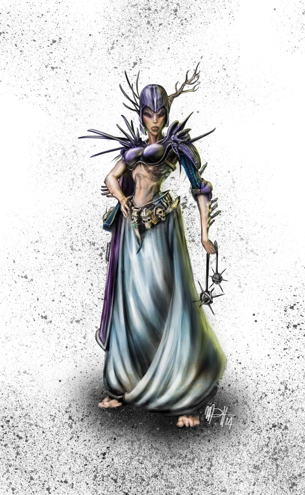
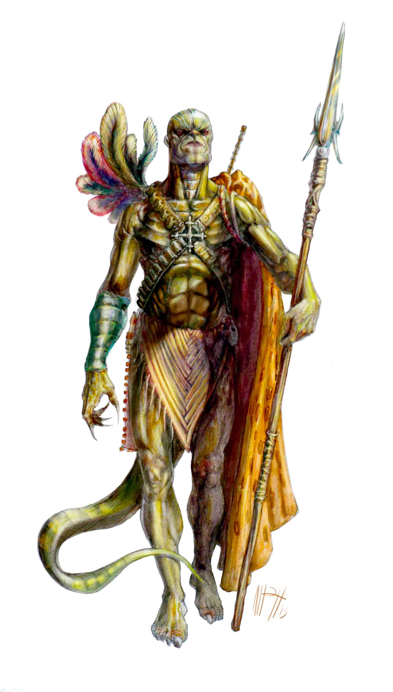

Oros delle Foreste è il Drago Patrono di Mustelan, Spyrian, Tesserian.
I Mustelan discendono dai roditori.
I Mustelan sono bassi (1,40 metri di media) e hanno il corpo ricoperto da peluria rossa, marrone, nera o bianca. Gli arti inferiori sono più sviluppati e muscolosi di quelli superiori. Le dita hanno unghie robuste e appuntite. “I Mustelan sono benedetti dalla vita e maledetti dalla morte”. Questo detto spiega il contrasto insito in questa razza: la più diffusa e vitale, ma anche quella dall'età media inferiore, circa 65 anni. L'incombenza della morte li spinge a profondere in qualunque attività ogni stilla di energia. Sono socievoli, sempre in cerca di nuovi stimoli e girovaghi, ma pervasi da perenne inquietudine. Le loro comunità sono famiglie allargate: le donne partoriscono in luoghi comuni, l’educazione dei figli è svolta in gruppo, e anche soldi e provviste vengono immagazzinati in luoghi pubblici. Questa “proprietà pubblica” s’estende fino ai beni immateriali: nelle canzoni e nei racconti mitici l’eroe non è un singolo, ma un gruppo.
I Tesserian discendono dai ragni.
La carattersitica più notevole di questa razza è il ketch: un organo, posto nelle braccia, capace di produrre tela. Il ketch può rilasciare da uno a tre metri di tela in un’ora e ogni Tesserian produce una tela unica per colore, odore, resistenza e leggerezza. I Tesserian sono alti di solito 1,90 metri. La pelle varia, così come la ruvida peluria, che si concentra in particolar modo sugli avambracci e sul petto, tra tonalità grigie, nere, rossastre, brune. Sulle tempie, sopra gli occhi, vi sono due file di lucide placche ossee. Prive di alcuna funzione, sono reminescenze dei molteplici occhi dei ragni. L’idea della ragnatela permea l’idea del mondo Tesserian. Ogni individuo è un nodo all’interno della grande trama sottostante l’esistenza di Populon e deve attenersi a uno stile di vita che non alteri ma anzi rafforzi l’equilibrio del mondo. I Tesserian detestano ogni azione irruenta e distruttiva come, ad esempio, la guerra. Sanno però essere anche ottimi guerrieri, poichè a volte la trama va difesa con la spada. Se i Tesserian fanno di tutto per preservare la trama sanno, essendo questa fragilissima, di ambire a un obiettivo utopico, e questo instilla in loro il seme della tristezza. Seme che può germogliare o no, ma che rimane un’ombra, pur piccola, sempre presente nella loro mente. La società Tesserian è divisa in tre classi principali: le sacerdotesse, i guaritori e i guerrieri. Ogni Tesserian viene indirizzato ad una determinata classe a seconda del tipo di tela che produce: più resistente quella dei guerrieri, più spugnosa e profumata quella dei guaritori, più luminosa e leggera quella delle sacerdotesse. Un Tesserian vive in media fino a 80 anni.
Gli Spyrian discendono dai serpenti
Hanno la pelle glabra coperta a chiazze da scaglie sgargianti, una coda flessuosa, e ogni primavera mutano pelle. Dei serpenti hanno anche l'apparente indifferenza. Apparente. Ritenuti gelidi e insensibili, gli Spyrian hanno in realtà emozioni profonde e complesse. Tacciono perchè il rumore disturba l'ascolto di se stessi e del respiro del Drago. Tacciono per assaporare ogni secondo del contatto con la terra, per loro fondamentale. Odiano infatti volare e navigare. Tacciono per percepire la circolarità dell'esistenza. Tutto è vita - morte - rinascita. Abbattono le loro case per costruirne di nuove e nella grande festa dello "Yenden Dogma" bruciano la vecchia pelle appena perduta. Adornano il loro corpo di monili d'oro, piume multicolori e fanno del tatuaggio un'arte. Vivono in tribù governate da guerrieri e sciamani, o in regni comandati da ricchi satrapi. Il loro sangue freddo li rende delle macchine da guerra quando la tensione sale e tutti gli altri sono colti dal panico. Il contatto con la terra permette loro di individuare forme di vita anche ad alcuni chilometri di distanza. Tutto questo li rende perfetti come spie, guerrieri, sicari, infiltratori ma anche maghi da battaglia.